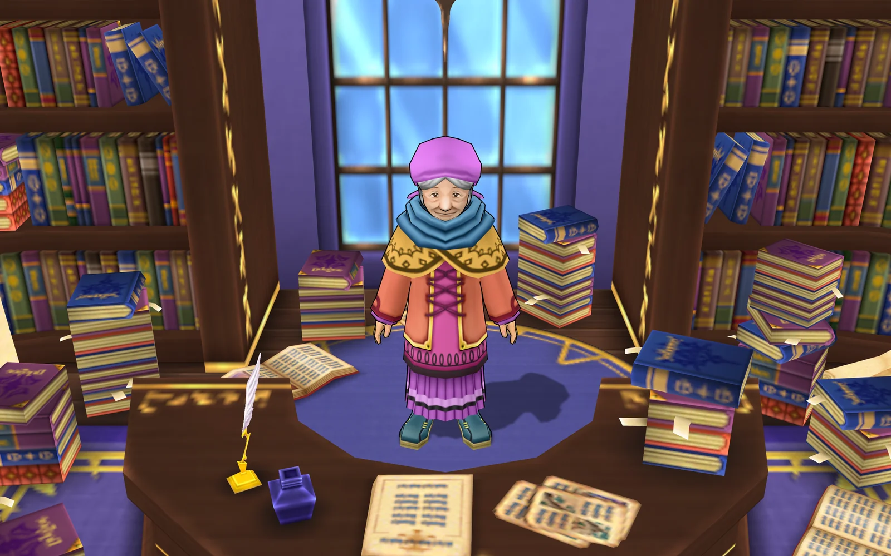
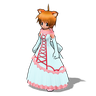
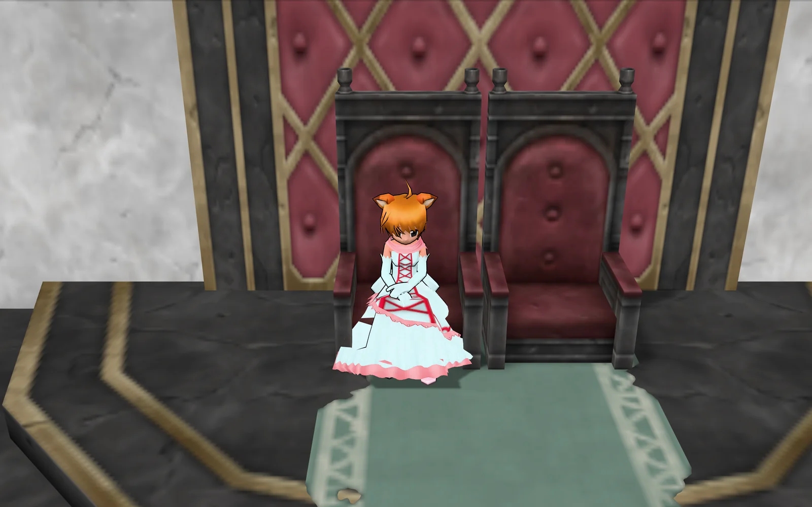
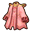
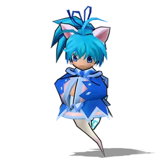
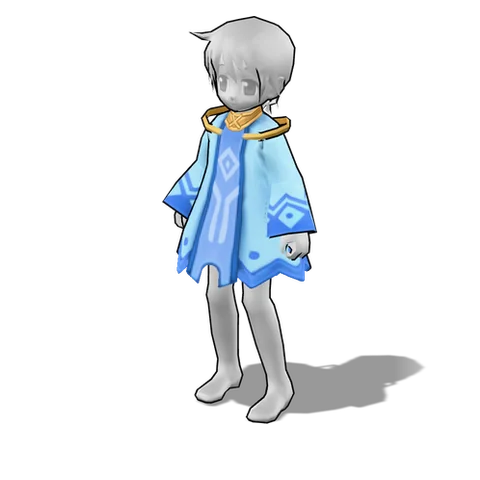
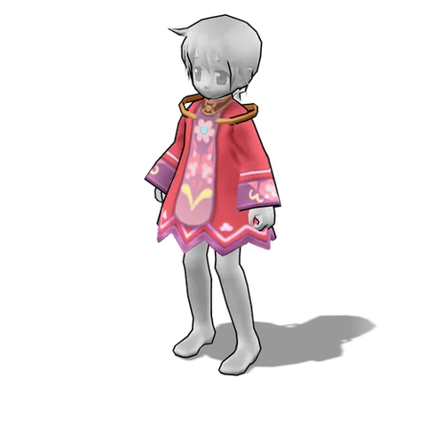
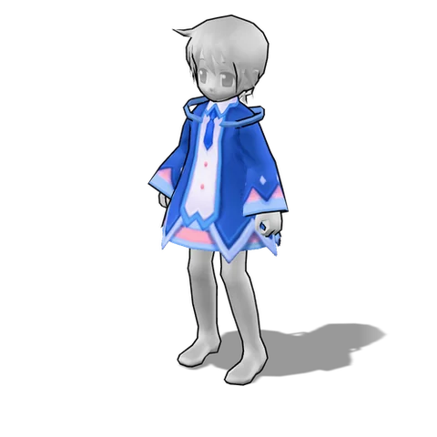
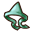

Catty (Sora) Quest
A book pulls you into the World of Books, where you save a princess from a demon.
- Level
- 30 or higher, with 20 Fame
- Reward
- Catty (Sora)
Before you start
- Finish the Catty (Momo) Quest and equip a Catty for the whole quest.
- No Catty? Possess a player who has done the Catty (Momo) Quest, then enter the bookstore.
- Finish any other quest you have open. The bookstore won't start this one until you do.
- Hit hard enough to beat a demon with very high magic defense.
Walkthrough
1. The job board
-
Go to Uptown and check the Job Request Board on the east side. Choose the first topic.

2. The Rental Library
- Go to Lake Utena. The Rental Library is in the house up the cliffs in the northeast.
-
Wear your Catty and talk to the Rental Bookstore Owner. Choose to enter the World of Books.
 Rental Bookstore Owner
Rental Bookstore Owner
-
Inside the book, "Stop reading" takes you back to the real world. "Turn to the next page" goes on with the quest.
3. The Queen's chamber
-
In Acronia Royal Palace (Queen Chamber), talk to the Maid and the Queen.
-
The Queen lets you open one Treasure Chest. The big chest gives 100 G. The small chest gives a
 Pururu Staff.
Pururu Staff.
4. Across the kingdom
- Take the portal into Acronia Kingdom Territory and go to the end.
- An Sinister-looking Adventurer and a Sinister-looking Merchant guard the next portal. They ask for 10 mushrooms or this much gold: gold = base level × 1,000 ÷ 2 Sneak behind them and you don't pay.
- If you die in the book, you go back to your save point.
5. The Holy Volcano
-
Climb to the top of Holy Volcano. Wear your Catty and talk to both maidens, Shrine Maiden and Shrine Maiden. Leave with them.
 Shrine Maiden
Shrine Maiden6. Save the princess
-
In the Cursed Castle, talk to the Princess. A demon appears.

Princess
-
Defeat the demon and pick up its drop. Hit it yourself. If only your pet kills it, nothing drops and you must fight it again.
- Leave through the portal and talk to the Princess again. You leave the World of Books.
7. The blue bandana
- Talk to the Rental Bookstore Owner.
-
Bring your Catty to the Seamstress in Uptown. She gives you a Blue Triangle Bandana.
 Seamstress
Seamstress8. Read the book again
- Go back to the Rental Library and enter the book again. Bring the Catty whose colour you want for your coat.
- Talk to the Queen. Equip that Catty and talk to the Maid. You get the Acronia Coat in that Catty's colour, from

Acronia Coat (Momo) to Acronia Coat (Sora). See Acronia Coat colours. - Cross Acronia Kingdom Territory and climb Holy Volcano again. In the kingdom, go around behind the Sinister-looking Adventurer and the Sinister-looking Merchant; you don't pay a second time.
- Talk to the Princess. Defeat the demon again and pick up its drop. This time the demon is Catty (Sora) in human form.
9. Back to the bookstore
- When the book sends you out, talk to the Rental Bookstore Owner. You receive Catty (Sora).
Rewards

| Reward | Notes |
|---|---|
| Catty (Sora) | Skills and details on Catties |
| From the Queen's chest. Pick one | |
One Acronia Coat: |
The colour of the Catty you wear. Catty (Sora) counts as blue |
Acronia Coat colours

Catty (Momo)

Catty (Midori)

Catty (Ai)

Catty (Yamabuki)

Catty (Sumire)

Catty (Akane)

Catty (Anzu)

Catty (Sora)
Good to know
- Catty (Sora) is one per account.
- Use the old

Catty (Midori) for the green coat. The new Midori can't get a coat. - Sketch the demon. Catty (Sora) in human form can be drawn with Monster Sketch for your Flying Garden. Draw it before you kill it, or leave the quest open to draw again.
- The Pururu Staff fits any job. It needs level 30 and has 35 magic attack.